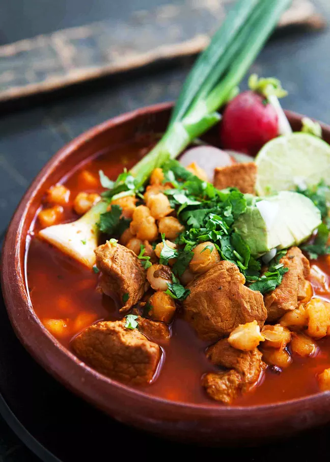

Pozole Rojo with Pork

Description
"Pozole Rojo is a traditional recipe made with tender pork and hominy and simmered
in the most delicious chile broth, then piled with your favorite garnishments."
It should be noted that while I am Latino, I am not much of a cook or
expert of Mexican cuisine. I have limited experience making Mexican food.
I am writing a recipe that I have used myself and is credited to the
Youtube channel
"Cooking Con Claudia". It turned out incredibly delicious and is perfect
for those cold winter days.
Her video recipe for Pozole Rojo with pork is found
here. I am giving credit
where credit is due, and am simply writing out her instructions as text.
Ingredients
For the meat
- 1 lb of pork ribs
- 4 lbs pork loin
- 1 onion
- 1 garlic head
- 3 bay leaves
- 2 Tbsp salt
- 1 large can of Hominy (about 110 oz)
For the sauce
- 20-25 New Mexico or Guajillo chili pods
- 5 chile de arbor
- 3 chile pasilla
- 4 garlic cloves
- 1/2 white onion (use remainder for garnishment)
- 1 Tbsp chicken bouillon
- 1 tsp cumin
- 1 Tbsp oregano
Garnishments
- Cabbage
- White and/or green onion
- Radishes
- Limes
Steps
- Cut the meat into smaller chunks.
- Add 20 cups of water to a large pot and set to
medium high heat. Bring to a boil.
- When water comes to a boil, add 1 onion,
1 head of garlic, 3 bay leaves, the meat, and
2 Tbsp of salt. Let it cook for 1 hours.
- In the meantime, rinse the white hominy and
prepare your garnishments.
- Prepare he sauce. For all of your chile pods,
remove the stems, deseed, and devein.
Give them a quick rinse.
- When 1 hour has passed, set aside 2 cups of
the pork broth and remove the onion and garlic. Add
these to a blender cup.
- Transfer your chili pods to a pot and fill
with water. Set pot to medium high heat and boil.
- Once it is boiling, remove all chile pods and place
in the blender cup.
- To the same blender cup, add 1/2 onion, 4 garlic
cloves, 1 Tbsp chicken bouillon, 1 tsp cumin,
1 Tbsp oregano, and 1 cup of water the chiles
boiled in.
- Blend together until smooth.
- Fry the sauce over medium high heat. Bring to
a simmer.
- Transfer the sauce to your pot and mix together.
- Add the white hominy to the pot.
- Try the pozole for salt and add more if needed.
- Cook for 30 minutes.
- Serve and enjoy!